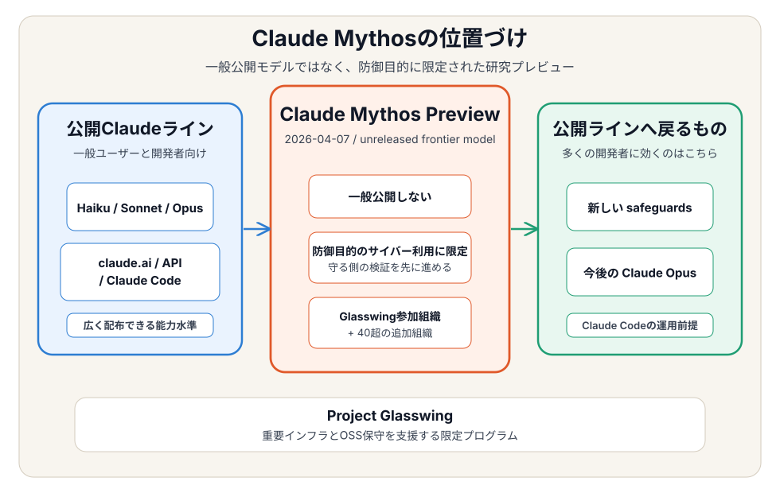
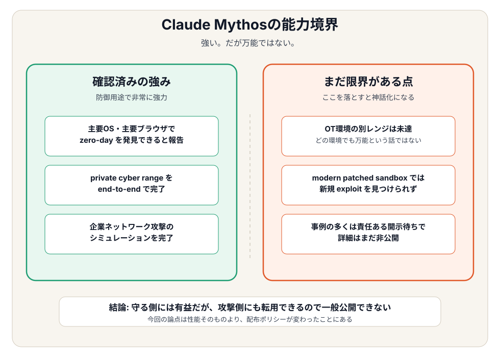

Claude Mythosとは何か──公開されない理由とProject Glasswingを解説¶
対象 / ポイント
対象: Claude系モデルの最新動向を追う開発者／AIセキュリティに関心があるエンジニア／Anthropicの発表を誇張なしで理解したい技術リーダー
ポイント:
Claude Mythos をひと言でいうと、強すぎるので一般公開しない Claude モデル である。2026年4月7日、Anthropic は Project Glasswing と同時にこのモデルを発表したが、誰でも使える新モデルとしては出さなかった1。
理由もはっきりしている。脆弱性を見つけるだけでなく、攻撃側にも転用できるレベルのサイバー能力が見えたからだ23。防御には役立つが、そのまま広く配るには危険すぎる。今回のニュースはこの一点に尽きる。
本記事の問いはシンプルだ。Claude Mythos は何者で、なぜ止められ、開発者は何を見ればいいのか。
1. まず結論：Mythos は一般公開モデルではない¶
最初に位置づけだけ押さえる。

Mythos は、Haiku や Sonnet や Opus のように広く使わせるためのモデルではない。Anthropic が限定的に提供する防御用の研究プレビューである12。
押さえるべき事実は3つだけでいい。
- 発表日は2026年4月7日。
Project Glasswingと同時に公表された1 - 配布先は限定。 Glasswing 参加組織と、40超の追加組織が中心だ1
- 一般公開の予定は現時点でない。 Anthropic 自身が明記している12
つまり、Mythos を「次に広く公開される Claude」だと受け取ると外す。正しくは、危険域に入った能力を守る側だけで先に使わせる枠である。
2. なぜ公開しないのか¶
理由は抽象的ではない。ハッキングに使える能力が強すぎるから だ。
Anthropic の System Card は、一般公開を見送った理由としてサイバー能力の大きな伸びを前面に置いている2。主要OSやWebブラウザでゼロデイを見つけ、悪用の方向まで進める能力が確認された。防御用途では強力だが、悪意ある利用者に渡ればそのまま危険になる123。

ポイントは、Anthropic が Mythos を「万能」とは書いていないことだ。
- 強い点: private cyber range を end-to-end で解き、企業ネットワーク攻撃シミュレーションも完了した2
- まだ限界がある点: OT環境の別レンジは未達で、modern patched sandbox では新規 exploit を見つけられなかった2
- それでも止めた理由: 守る側に使えば有益でも、攻撃側にも十分転用できる水準に達したからだ12
一部では「意識の話なのか」といった読みもあるが、一次情報で中心にある論点はそこではない。公開を止めた主因はサイバー能力の危険度である2。
3. どれくらい強いのか¶
ベンチマーク上でも、Mythos は Opus 4.6 の少し上ではない。かなり差がある。
| ベンチマーク | Mythos Preview | Opus 4.6 | 読み方 |
|---|---|---|---|
| SWE-bench Verified | 93.9% | 80.8% | 実務寄りのソフトウェア修正タスク12 |
| SWE-bench Pro | 77.8% | 53.4% | 公開問題セット寄りの比較12 |
| Terminal-Bench 2.0 | 82.0% | 65.4% | ターミナル実行・エージェント完遂力12 |
| GPQA Diamond | 94.6% | 91.3% | 高難度推論12 |
| Humanity's Last Exam | 64.7% with tools | 53.1% with tools | 幅広い学術・知識推論12 |
| OSWorld-Verified | 79.6% | 72.7% | GUIを含むコンピュータ利用12 |
ただし、ここで大事なのは「スコアが高い」こと自体ではない。Anthropic が止めたのは、単に頭が良いからではなく、その強さが攻撃シナリオに直結する種類のものだったから である。
Red Team レポートでも、追加で数千件の高・重大脆弱性を責任ある形で開示していると説明されている3。数字だけの話ではない。実際の発見能力が問題になっている。
4. 開発者は何を見ればいいのか¶
一般の開発者にとって重要なのは、「いつ Mythos が使えるか」ではない。見るべきは次の3点だ。
- 安全装置が先に強化される。 Glasswing の発表では、今後の Claude Opus に新しい safeguards を反映すると明記されている1
- 権限設計の重要度が上がる。 強いモデルを前提にするなら、プロンプトで止めるより先に、秘密や実行権限へ構造的に触れさせない設計が必要になる
- Claude Code の運用前提も変わる。 モデル性能の話だけでなく、「どこまで触らせるか」「どこで止めるか」がますます重要になる
この意味で Mythos は、新モデルのティザーというより、危険域の能力をどう配るかという運用ルールの実例である。ここは Anthropic Managed Agentsとは何か で見た権限分離やハーネス設計の話ともつながる。
Opus 側の公開ラインを基準に見たい場合は、Claude Opus 4.6完全ガイド も補助線になる。Mythos はその延長ではあるが、公開ポリシーがまったく違う。
まとめ¶
Claude Mythos は「次の一般公開Claude」ではない。危険なので広くは出さないが、防御側では使わせたい という判断で生まれた限定研究プレビューだ12。
ここで見えてくるのは、今後の frontier model の出し方そのものが変わる可能性である。まず限定環境で防御運用に使い、そこで得た知見と safeguards を公開モデルへ戻す。能力を先に広く配る時代から、安全装置を先に固めてから戻す時代へ動き始めている と読める。
だから見るべきは Mythos そのものより、Mythos 級の能力を前提に Anthropic がどんな安全装置を公開ラインへ戻してくるか である。Opus や Claude Code を実務で使う側にとって、本当に効くのはそこだ。
関連記事¶
- Claude Opus 4.6完全ガイド（2026年2月） — Mythos 比較の基準になる公開モデル側の整理
- Claude Code Security発表まとめ — 防御側ツールとしての流れを追う補助線
- Anthropic Managed Agentsとは何か — 強いモデルを安全に動かす基盤設計の読み解き